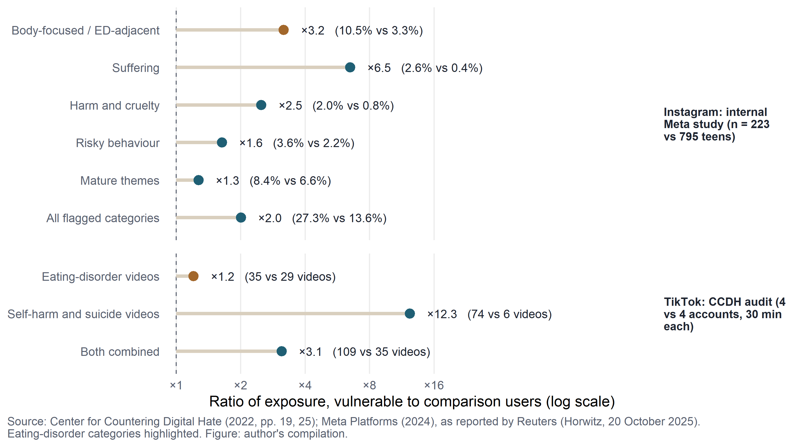
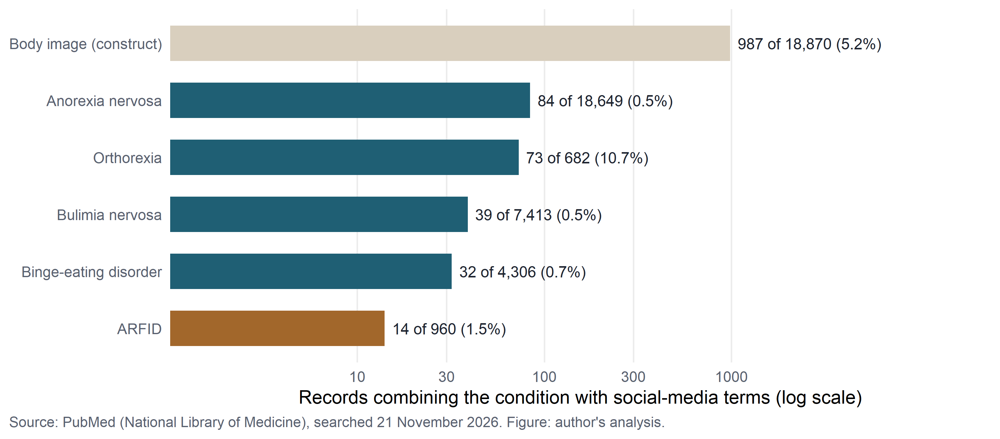
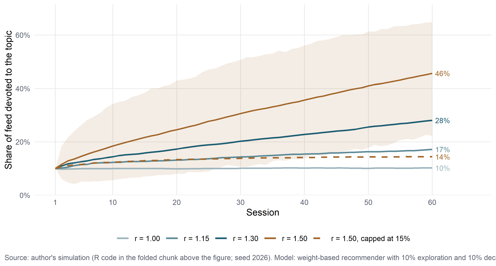

4 Digital soil: social platforms, recommender systems and ARFID
TipIn plain words
There is good evidence that some kinds of social media content (idealised bodies, “fitspiration”, weight-loss advice) can make young people feel worse about their bodies and are linked with eating-disorder symptoms. There is also evidence that recommendation systems show more of that content to young people who are already struggling. ARFID is different. It is not driven by body image, and almost no research has asked how online life might affect it. This chapter keeps what is known apart from what is only plausible. It suggests that for ARFID the useful questions are less about how young people look and more about what they learn to fear, what they are told to avoid, and how the adults around them are advised to respond.
There is an old story about a man searching for his keys under a streetlamp. Asked whether he dropped them there, he says no, he dropped them in the park, but this is where the light is. Research on digital media and eating disorders has a streetlamp problem. Two decades of work have lit up one pathway thoroughly: from idealised images, through social comparison and the internalisation of appearance ideals, to body dissatisfaction and disordered eating. That pathway is real and well documented, and Section 4.1 reviews it. But it was mapped for disorders defined by concern about weight and shape, and ARFID is defined by the absence of that concern (American Psychiatric Association, 2022). If digital environments matter for ARFID, the keys are probably somewhere else.
The chapter proceeds in six steps. Section 4.1 summarises the evidence on the body-image pathway, including what platforms themselves deliver to young users. Section 4.2 explains why that evidence does not transfer to ARFID and measures, with a reproducible bibliometric check, how little light falls on it. Section 4.3 sets out seven candidate digital pathways as testable hypotheses and grades each, using a small simulation to make one mechanism concrete. Section 4.4 asks how digital exposure can be measured, Section 4.5 asks what current regulation does and does not reach, and Section 4.6 proposes a research agenda. Throughout, the working model of Section 3.8 provides the frame: digital environments are unlikely to alter the largely genetic liability layer, so if they matter for ARFID they will act as triggers and as maintaining loops.
4.1 What is established: the body-image pathway
Associations and their size
The first systematic review of social networking sites and eating outcomes identified 20 studies and concluded that use of these sites was associated with body-image concern and disordered eating. Photo-related activities were singled out as particularly problematic, and in the few studies that examined process, appearance-based social comparison mediated the association. Nearly all the evidence was correlational (Holland & Tiggemann, 2016). Later reviews broadened the picture without overturning it. A scoping review of 50 studies from 17 countries, covering people aged 10–24 and published between 2016 and 2021, found consistent links running through social comparison, internalisation of thin or fit ideals and self-objectification, strengthened by pro-eating-disorder content and appearance-focused platforms. Of its 45 quantitative studies, however, 30 were cross-sectional and only two were longitudinal (Dane & Bhatia, 2023). A review restricted to preadolescents and adolescents (16 studies) reached a similar conclusion and noted the same reliance on cross-sectional self-report (Digennaro & Tescione, 2024).
Meta-analyses put numbers on these associations, and the pattern of the numbers is instructive (Table 4.1). Across 22 studies contributing 87 effect sizes, the correlation between use of social networking sites and disordered eating behaviours was small (r = 0.09) (Zhang et al., 2021). Problematic use of the internet, which measures compulsive or impairing use rather than time, correlated more strongly with eating-disorder psychopathology (r = 0.22 in 32,295 participants), and the association was not moderated by gender (Ioannidis et al., 2021). The strongest associations concern a psychological process rather than an exposure: across 83 studies and 55,440 participants, online social comparison correlated r = 0.45 with body-image concern and r = 0.36 with eating-disorder symptoms (Bonfanti et al., 2025).
The gradient, small for time and moderate for process, is the first lesson of this literature. How wet one gets depends less on the hours spent outdoors than on whether one is standing under the gutter.
Content matters more than time
Studies that separate what young people see from how long they spend online support the same conclusion. In two demographically diverse cohorts of undergraduates surveyed in 2015 and 2022, the type of content consumed, but not the time spent on social media or the number of platforms used, was associated with body-image disturbance and disordered eating once gender and body mass index were taken into account. Exposure to weight-loss content was associated with lower body appreciation, greater fear of negative appearance evaluation and more frequent binge eating; contrary to the authors’ hypothesis, body-positivity and body-neutrality content was not protective (Sanzari et al., 2023).
Experimental studies isolate content effects more cleanly. A systematic review of 43 experiments (N = 8,637; 89.6% female; mean age 21.6) found that viewing idealised images on social networking sites increased body dissatisfaction, that comparison made while viewing mediated the effect, and that a stable tendency to compare oneself with others moderated it; only two of the experiments involved adolescents (Fioravanti et al., 2022). In a systematic review of “fitspiration” content, 17 of the 19 studies that examined body image found that exposure increased body dissatisfaction (Jerónimo & Carraça, 2022). In a randomised online experiment with women with (n = 172) and without (n = 210) eating disorders, 30 Instagram posts of fitspiration increased body dissatisfaction, whereas body-positive posts and text-based “body neutrality” posts reduced it; the effects did not differ between the two groups (Ladwig et al., 2024). Side-by-side “Instagram vs reality” images reduced body dissatisfaction in 305 women aged 18–30 relative to idealised images alone, and blunted the effect of appearance comparison (Tiggemann & Anderberg, 2020). A systematic review and meta-analysis of 56 studies concluded that body-positive content improves body satisfaction and mood in the short term, with weaker effects on body surveillance and social comparison (Jiménez-García et al., 2025).
Individual differences shape these effects. In 1,153 adolescents (55.4% boys; mean age 13.7), internalisation of the thin ideal was the only variable associated with body dissatisfaction in both sexes once other factors were considered, and among boys internalisation of a muscular ideal moderated the link with social media: for boys who had strongly internalised that ideal, more use went with greater dissatisfaction (Vuong et al., 2021). Among 246 early-adolescent girls, media literacy, particularly critical thinking about media, buffered the effects of thin-ideal internalisation and habitual upward comparison on body satisfaction after exposure to thin-ideal images (McLean et al., 2016).
A smaller literature concerns content about food rather than bodies. A systematic review of 38 studies found positive associations between exposure to some eating-related content (fast-food advertising, “clean eating” and eating videos) and body-image concern, disordered eating and consumption, but no such association for “healthy food” content; viewers expressed mixed feelings about nutrition information and mukbang videos, in which hosts eat large quantities of food on camera (Wu et al., 2024). A content analysis of 250 TikTok videos from the five most popular diet-related hashtags found that more than half depicted body checking and more than half offered dietary advice. Most of the advice-givers (64%) presented themselves as experts, but claimed expertise was not associated with engagement; humour was. Only 6.4% of videos depicted disordered eating behaviours outright (Munro et al., 2024). The point for this book is that a large share of food content online is advice: confident, personal and often unqualified.
Within-person evidence and causal tests
Most of the evidence above compares people with one another. Two longitudinal studies that separated between-person from within-person effects in adolescents complicate the picture. In a three-wave panel of 2,500 Czech adolescents aged 11–16, adolescents who were more active around appearance on social media were more dissatisfied with their bodies, but increases in an individual’s appearance activity did not predict increases in that individual’s body dissatisfaction six months later, and neither internalisation nor comparison mediated the link within persons (Kvardova et al., 2025). In another within-person study of adolescents, increased posting predicted lower body dissatisfaction four months later in one interval only, increased exposure predicted lower dissatisfaction among boys, and liking or commenting predicted nothing (Schreurs & Vandenbosch, 2022). These findings do not cancel the experimental evidence for short-term effects. They do caution against reading population correlations as descriptions of what happens inside each adolescent, the same distinction between populations and individuals that Section 3.1.3 drew for heritability.
Causal tests of reducing use are now accumulating. Meta-analyses of randomised trials in which participants were asked to stop using social media for a period have found modest benefits for mental health in adults and adolescents (Linden, 2026). A recent study of young adults aged 18–24 illustrates both the promise and the limits of this evidence: among 295 participants who opted into a one-week “detox”, symptoms of depression fell by 24.8%, anxiety by 16.1% and insomnia by 14.5%, while loneliness did not change; but participation was optional and there was no control group, so expectation effects and regression to the mean cannot be excluded (Calvert et al., 2025). Eating outcomes were not measured.
What platforms deliver
Studies of users measure what people report seeing. A second body of evidence examines what platforms deliver, and most of it comes from audits by advocacy organisations, investigative journalism and leaked or disclosed company documents. These sources call for explicit appraisal, and they are graded here accordingly.
In the Deadly by Design audit, researchers created two new TikTok accounts registered as 13-year-olds in each of the United States, the United Kingdom, Australia and Canada. One account in each pair had a username containing “loseweight”. All accounts paused on and liked videos about body image and mental health, and the first 30 minutes of each “For You” feed were recorded. Eating-disorder content appeared within eight minutes at the earliest, and body-image or mental-health content was recommended every 39 seconds. The report’s headline finding was that the “vulnerable” accounts were shown three times as many harmful videos and twelve times as many self-harm videos as the standard accounts (Center for Countering Digital Hate, 2022). The report’s own tables show that the threefold difference was driven by self-harm and suicide content (74 videos against 6); for eating-disorder videos the difference was small (35 against 29). The distinction matters for what follows.
A later audit of YouTube used an account set up as a 13-year-old girl in the United States, seeded with 100 eating-disorder videos found through 20 search terms, and recorded the top ten “Up Next” recommendations in 100 separate simulations. Of the 1,000 recommendations, 638 concerned eating disorders or weight loss, 344 were classified as harmful eating-disorder content and 50 concerned self-harm or suicide; the harmful videos averaged more than 388,000 views each, and YouTube took no action on 81 of 100 such videos that the researchers reported (Center for Countering Digital Hate, 2024). On Pinterest, a single click on a pin about recovery from an eating disorder was enough, in each of ten fresh test accounts, for four to eight of the first 25 pins in the home feed to concern weight loss or eating disorders (Golbeck, 2025). For recommenders, seeking recovery and seeking the disorder can look alike. A follower-network analysis of Instagram by Reset Australia mapped a “bubble” of pro-eating-disorder accounts (Reset Australia, 2022), which other researchers have summarised as reaching some 20 million unique followers (Center for Countering Digital Hate, 2022). A legal analysis also describes a newspaper investigation in which a dozen automated accounts registered as 13-year-olds were served tens of thousands of weight-loss videos within a few weeks (Costello et al., 2023).
The most informative single document comes from inside a platform. In an internal study disclosed in 2025, Meta followed 1,149 teenagers in the United States through the 2023–2024 school year and manually reviewed random samples of the content they were shown over three months. For the 223 teenagers who reported frequently feeling bad about their bodies after using Instagram, content the company labelled body-focused or “eating-disorder adjacent” made up 10.5% of what they saw, against 3.3% for the 795 other teenagers in the comparison. A broader class of content that Meta’s advisers had supported limiting made up 27.3% and 13.6% respectively (Horwitz, 2025b; Meta Platforms, 2024). Only three of the flagged pieces in either group scored above a low threshold on the company’s existing integrity classifiers, which had been built to detect policy violations rather than this kind of material (Meta Platforms, 2024). The authors stated that the causal direction could not be established: teenagers who felt bad about their bodies may have sought such content out (Horwitz, 2025b). A separate report by child-safety organisations, reviewed by researchers at Northeastern University, judged only 8 of 47 Instagram teen-safety features to be fully effective; Meta disputed the findings (Horwitz, 2025a).
Figure 4.1 sets the two sources that compare groups side by side.
These sources share well-known weaknesses. Audits use few accounts and short observation windows; classifications are made by the organisations’ own researchers (in the YouTube audit, each decision was agreed by at least two of them); the organisations campaign on the issues they study; and platforms change their systems continually, so findings are dated snapshots. None of the figures is a prevalence estimate. Yet the audits establish something that surveys of users cannot: conditional delivery, the fact that a signal of interest or vulnerability changes what the system serves. The internal Meta study adds the platform’s own measurement, with an appropriately cautious reading of causal direction. Taken together, the evidence supports, at grade E2, the claim that recommender systems deliver more eating-disorder-relevant content to young users who signal interest or vulnerability. Whether that delivery causes the onset of an eating disorder remains H.
The same platforms also offer support. For adolescents with eating disorders, social media has been described as a double-edged sword: a source of connection, information and recovery communities, and also of triggers, comparison and “thinspiration” (Nawaz et al., 2024). Because adolescents are unlikely to stop using these platforms, reviews of mitigation strategies argue that harm reduction has to work within them (Mazzeo et al., 2024). A case report describes how videos meant to warn against anorexia (labelled “anti-pro-ana”) led an adolescent to imitate the behaviours they depicted (Logrieco et al., 2021). In Spain, a small cross-sectional study of 115 students aged 12–17 at one school in Córdoba classified 43.5% as at risk of an eating disorder and found that more hours of social media use were associated with higher risk (odds ratio 5.54) (Peréz-Jiménez et al., 2025). The design does not allow causal inference, but it is a reminder that the question is also being asked locally.
| Source | Design and sample | Main finding | Grade |
|---|---|---|---|
| Holland & Tiggemann (2016) | Systematic review; 20 studies | Social networking use associated with body-image concern and disordered eating; photo activities and appearance comparison implicated | E1 |
| Dane & Bhatia (2023) | Scoping review; 50 studies, 17 countries, ages 10–24 | Pathways via comparison, ideal internalisation and self-objectification; 30 of 45 quantitative studies cross-sectional | E1 |
| Zhang et al. (2021) | Meta-analysis; 22 studies, 87 effect sizes | Use of social networking sites and disordered eating: r = 0.09 | E1 |
| Ioannidis et al. (2021) | Meta-analysis; n = 32,295 | Problematic internet use and eating-disorder psychopathology: r = 0.22 | E1 |
| Bonfanti et al. (2025) | Meta-analysis; 83 studies, n = 55,440 | Online social comparison: r = 0.45 with body-image concern, r = 0.36 with eating-disorder symptoms | E1 |
| Fioravanti et al. (2022); Jerónimo & Carraça (2022) | Systematic reviews of experiments; 43 and 20 studies | Idealised and fitspiration images increase body dissatisfaction in the short term | E1 |
| Jiménez-García et al. (2025); Tiggemann & Anderberg (2020); Ladwig et al. (2024) | Meta-analysis and experiments | Body-positive and “Instagram vs reality” content reduce body dissatisfaction in the short term | E1 |
| Sanzari et al. (2023); Wu et al. (2024) | Two cohorts; systematic review of 38 studies | Type of content, not time, associated with outcomes; some eating-related content implicated | E2 |
| Kvardova et al. (2025); Schreurs & Vandenbosch (2022) | Within-person panels of adolescents | No consistent within-person increase in body dissatisfaction months later | E2 |
| Center for Countering Digital Hate (2022); Center for Countering Digital Hate (2024); Golbeck (2025); Meta Platforms (2024) | Platform audits; internal company study | Delivery of eating-disorder-relevant content rises with signalled interest or vulnerability | E2 grey literature, appraised |
4.2 Why ARFID falls outside that evidence
A definitional exclusion
The pathway just described runs through appearance comparison, internalisation of ideals and body dissatisfaction, and its outcome measures (body dissatisfaction, drive for thinness, dietary restraint) are designed to capture concern about weight and shape. ARFID is defined by the absence of that concern as the driver of restriction (American Psychiatric Association, 2022), and measures that separate the two families of motivation exist precisely because the distinction matters clinically (Çelik et al., 2026). The meta-analytic findings of Section 4.1 therefore cannot simply be transferred to ARFID.
The boundary is not watertight. A nine-year-old with ARFID and severe malnutrition valued her small size and described a desire for thinness shaped by beauty ideals on social media, yet her restriction was driven by low appetite, fear of new foods and fear of adverse consequences (Barney et al., 2022). In 515 adults recruited online, dysmorphic concern fully mediated the association between avoidant/restrictive eating and suicidal ideation (Salameh et al., 2024); the design was cross-sectional and the eating measure a screen, but the finding suggests that body concern can co-occur with ARFID and matter for a subgroup. Neither observation licenses the transfer of body-image findings to ARFID. Neither licenses the opposite conclusion either, that ARFID is untouched by digital life.
How little light: a bibliometric check
How much of the research on social media concerns ARFID can be checked directly. On 21 November 2026, PubMed was searched for records published from 2013 (the year ARFID entered DSM-5) whose titles or abstracts named each condition, first alone and then together with any of six social-media terms. Figure 4.2 shows the results.

The proportions are not the main point: ARFID’s share (1.5%) is in fact higher than that of anorexia nervosa (0.5%), whose literature is dominated by clinical and biological work. The point is the absolute volume and, above all, what the records do. Screening the abstracts of the 14 ARFID records shows that most use platforms as a means rather than study them as an object (Table 4.2). Nine name social media only as a recruitment or dissemination channel or as a keyword. Two measured media use in general samples of adolescents without analysing ARFID separately. Two are case reports in which content from social media is mentioned, one of them a case of orthorexia in which ARFID had been considered and excluded. One analysed platform content about ARFID: a study of pro-recovery videos on TikTok that included the hashtag #arfidrecovery (Greene et al., 2023). On the evidence of their abstracts, none reported an analysis of digital exposure specific to ARFID, and none tested an association with the onset or course of the disorder.
| Role of social media in the record | Records | Sources |
|---|---|---|
| Recruitment or dissemination channel, or keyword only | 9 | Rodan et al. (2025); Burrell et al. (2025); Bulik et al. (2023) (preprint and journal versions); Hog et al. (2025); Ruiz Fischer & Starr (2024); Cunliffe et al. (2022); Salameh et al. (2024); Hoek (2025) |
| Media use measured in general adolescent samples, without ARFID-specific analysis | 2 | Erraoui et al. (2025); Zięba et al. (2025) |
| Platform content mentioned in a case report | 2 | Barney et al. (2022); Yoshimura et al. (2023) |
| Analysis of platform content concerning ARFID | 1 | Greene et al. (2023) |
| ARFID-specific analysis of digital exposure | 0 | — |
There is an irony here. Platforms have become part of the infrastructure of ARFID research: an international survey of people with eating disorders, advertised through social media, online forums and clinical services, recruited 6,612 respondents, 589 of whom reported a diagnosis of ARFID (Rodan et al., 2025), and much population data on ARFID now comes from online panels and online recruitment (Chapter 1). The platforms help researchers find people with ARFID but are almost never what is being studied. That raises a further, methodological caution: people recruited through platforms may differ systematically from those who are not, including in exactly the digital habits that this chapter is concerned with.
4.3 Candidate digital pathways
If the keys are not under the body-image lamp, where might they be? This section proposes seven places to look. Each is stated as a hypothesis, linked to the presentation of ARFID it would most plausibly affect (the three dials of Section 2.2.1: sensory sensitivity, lack of interest, fear of aversive consequences) and graded. Table 4.3 draws them together at the end.
Vicarious aversive content and fear learning
The fear presentation of ARFID often begins with an aversive eating event. In a multi-site clinical study, a history of vomiting or choking was recorded in 13.2% of young people with ARFID (Fisher et al., 2014), and a recent theoretical model compares the course of the fear presentation with that of panic disorder (Zickgraf & Schwartz, 2025). In functional imaging, images of choking and vomiting elicited amygdala responses across young people, with greater insula activation in those with the fear presentation; the authors suggest that universally feared experiences of this kind may act as the unconditioned stimulus from which ARFID fear is learnt (Sailer et al., 2025). Not every patient, however, recalls a frightening event of their own.
Experimental psychology offers a route by which fear can be acquired without direct experience. Forty years of research show that fears can be learnt vicariously, by watching other people’s responses (Askew & Field, 2008). In children, pairing pictures of novel animals with fearful faces increased fear beliefs, avoidance, heart rate and attentional bias towards the animals, and the changes in beliefs and avoidance persisted at one week and one month (Reynolds et al., 2014). Fear also spread second-hand: animals merely seen alongside the fear-paired animal acquired fear-related responses, which the authors suggest may explain why some people cannot recall any learning episode for their fears (Reynolds et al., 2017). In 60 children aged 6–10, peers were as effective as adults in transmitting fear, and later pairing with positive faces reduced it (Dunne & Askew, 2018). A systematic review of 18 experiments found that positive modelling prevented, reduced or reversed fear in most of them (Krause & Askew, 2022).
Hypothesis. Short-form video makes vicarious aversive eating events abundant: people choking, gagging, vomiting, reacting to food poisoning or allergens, or warning that a food is dangerous. For a child or adolescent with a sensitive threat system, each such video may function as a vicarious learning trial, and repeated recommendation multiplies the trials. Second-order learning would allow fear to spread from the food shown to foods associated with it. The same literature suggests the converse: content showing calm peers eating varied food could act as positive modelling, which is one reason why a purely restrictive response to online content may be the wrong one. Grade: E2 for vicarious fear learning in children, with non-food stimuli and in the laboratory; H for the digital route to ARFID. The laboratory paradigms used pictures of animals and faces, not videos of eating, and that gap is exactly what research would need to close.
Gut-health, elimination diets and wellness advice
Gastrointestinal conditions are closely associated with ARFID. The association appears in population data (Flack et al., 2026), ARFID symptoms were found in 19% of patients with coeliac disease or non-coeliac gluten sensitivity at consultation (Atkins et al., 2026), and in inflammatory bowel disease positive screens were associated with lower food literacy (Yin et al., 2023). Online, people with gut symptoms meet a large volume of dietary advice from creators who present themselves as experts (Munro et al., 2024), alongside what one commentator calls “wellness scams” (Linden, 2026).
Hypothesis. Advice to eliminate foods in response to symptoms narrows the diet. In people who already attend closely to bodily sensations, the interoceptive sensitivity that the panic-disorder model places at the centre of fear-driven ARFID (Zickgraf & Schwartz, 2025), content attributing symptoms to particular foods may supply the catastrophic interpretations that maintain avoidance. Grade: E2 for the clinical association between gastrointestinal illness and ARFID; H for the digital route.
“Clean eating” and orthorexic ideals
A systematic review of 22 studies, mostly cross-sectional and in non-clinical samples, found that greater social media use was associated with more symptoms of orthorexia nervosa, particularly where content concerned nutrition, thinness and exercise, with stronger associations for Instagram, Tumblr and Grindr (Vintró-Alcaraz et al., 2026). A case report shows how the boundary with ARFID is drawn in practice: a 13-year-old with rapid weight loss was first thought to have anorexia nervosa, then ARFID, which was excluded because she showed no food avoidance as such; her restriction followed rules about nutrition taken from magazines and social media promoting an almost exclusively vegetable diet (Yoshimura et al., 2023). Proposed criteria for orthorexia remain provisional (Donini et al., 2022).
Hypothesis. Moralised categories of food (“clean”, “toxic”, “processed”) narrow the range of acceptable foods for reasons that are neither sensory nor appetitive. Where fear of contamination or illness enters, the restriction can come to resemble the fear presentation of ARFID. The practical implication is diagnostic: digital content may push some presentations towards this boundary, so screening and referral must ask why a young person avoids a food, not only what they avoid (Chapter 5). Grade: E1 for the cross-sectional association between social media use and orthorexic symptoms; E3 for boundary cases relevant to ARFID.
Diagnostic identity and online communities
Diagnosis-specific communities form around hashtags. A thematic analysis of 241 popular pro-recovery videos on TikTok under five hashtags, among them #arfidrecovery, found clear differences in how recovery was imagined from one diagnosis to the next (Greene et al., 2023). A content analysis of 100 TikTok videos on depression and anxiety, each viewed more than a million times, found that videos presenting personal experience attracted more engagement than videos by health professionals, and that mention of a professional diagnosis was the least common topic; the authors warn that attributing generic symptoms to a condition may encourage self-diagnosis (Samuel et al., 2024).
For ARFID the potential benefits are real. Recognition is poor, adults often go undiagnosed (Section 2.5.3), and parents of selective eaters gather in online support groups (Cunliffe et al., 2022). Communities may be where people first find a name for their difficulties and the confidence to seek help. The potential harms are equally plausible: ordinary picky eating relabelled as a disorder, an identity consolidated around a list of “safe foods”, accommodation normalised as the only kind response, or a presentation driven by weight concern presented, and accepted, as ARFID. Grade: E3 for the existence and character of ARFID content; H for its effects on help-seeking and course.
Diagnostic overshadowing, human and algorithmic
Diagnostic overshadowing occurs when a salient explanation leads observers to miss another. The dominant body-image frame can lead adults to overlook restriction that has nothing to do with weight, or to read co-occurring body concerns as the cause of restriction that they do not drive (Barney et al., 2022). The same frame is now being written into software. Methods for detecting eating disorders from social media content (content tags, topic modelling and natural-language processing) have been reviewed with the conclusion that they are feasible but that platforms’ moderation systems are opaque and need input from eating-disorder experts (D’Adamo et al., 2026). Large language models have been used to identify diet and body concerns in online communities (Chu et al., 2024). Such systems learn from the vocabulary of the communities on which they are trained, and that vocabulary is overwhelmingly about bodies. Their performance can also be uneven in ways that are hard to predict: in Spanish-language Twitter data from 177 users with signs of anorexia nervosa and 326 controls, classifiers missed far more cases among women (false-negative rate 0.082) than among men (0.005) (Solans Noguero et al., 2023). The internal Meta study adds that classifiers built to detect rule violations captured almost none of the body-focused material that human reviewers flagged (Meta Platforms, 2024). Content relevant to ARFID (videos of choking, lists of “safe foods”, complaints about textures) does not appear among the categories described in any of the documents reviewed here.
Hypothesis. The body-image frame produces systematic under-recognition of ARFID by people and by automated systems alike. Grade: E3. This is the pathway most directly relevant to Chapter 5, because a protocol based on a large language model could reproduce the same blind spot unless it is designed and tested against it.
Recommender amplification and the “bubble” effect
Engagement-optimised recommender systems learn from implicit signals such as how long a user lingers on an item. The audits described above used exactly such signals (accounts “paused briefly” on videos and liked them) and found that the feed adapted within minutes (Center for Countering Digital Hate, 2022). A young person whose attention is captured by threat-relevant content (and attentional bias towards feared stimuli is one of the effects of vicarious fear learning (Reynolds et al., 2014)) supplies the signal that such systems reward. Desire paths across a lawn offer an analogy: each crossing flattens the grass a little, which makes the same route more likely next time, until the path becomes the route. A recommender can wear a path in one user’s feed in the same way.
Figure 4.3 makes the mechanism explicit with a deliberately simple simulation. A feed draws 20 items per session from ten topics in proportion to learnt weights, with 10% of slots reserved for exploration. The user engages with each item with probability 0.30, except for one topic, here food-fear videos, where the probability is multiplied by an attraction ratio r. After each session, the weights decay by 10% and increase by one unit for each engagement. Nothing in the model is harmful by design: there is no malicious actor, no policy-violating content and no intention to narrow the feed.
Show the simulation code (R)
simulate_feed <- function(r, cap = NA, K = 10, sessions = 60, n_feed = 20,
p0 = 0.30, eta = 1, lambda = 0.90, eps = 0.10) {
w <- rep(1, K); share <- numeric(sessions)
for (t in seq_len(sessions)) {
pr <- (1 - eps) * w / sum(w) + eps / K # exploitation plus exploration
if (!is.na(cap) && pr[1] > cap) { # optional exposure cap on topic 1
pr[-1] <- pr[-1] / sum(pr[-1]) * (1 - cap); pr[1] <- cap }
share[t] <- pr[1]
feed <- sample.int(K, n_feed, replace = TRUE, prob = pr)
p <- rep(p0, K); p[1] <- min(1, p0 * r) # attraction ratio for topic 1
eng <- rbinom(n_feed, 1, p[feed]) # implicit engagement (dwell, like)
w <- pmax(lambda * w + eta * tabulate(feed[eng == 1], nbins = K), 1e-6)
}
share
}
set.seed(2026)
runs <- do.call(rbind, lapply(list(list(r = 1, cap = NA), list(r = 1.15, cap = NA), list(r = 1.3, cap = NA),
list(r = 1.5, cap = NA), list(r = 1.5, cap = 0.15)), function(s) {
m <- replicate(500, simulate_feed(s$r, s$cap))
data.frame(session = seq_len(nrow(m)), mean = rowMeans(m),
lo = apply(m, 1, quantile, 0.10), hi = apply(m, 1, quantile, 0.90),
r = s$r, policy = ifelse(is.na(s$cap), "Engagement only", "Engagement with 15% cap"))
}))
Three features of the result are worth noting. First, a modest difference in attention is enough: with an attraction ratio of 1.3, the topic’s share of the feed nearly triples, and at 1.5 it reaches almost half the feed by the sixtieth session. Second, even a user with no particular attraction (r = 1) can drift: the mean stays at 10%, but individual feeds wander widely by chance, which is why “lock-in” can occur without any initial vulnerability. Third, an exposure cap holds the share down, but only if the content falls in a category that the platform recognises as sensitive. Food-fear content would not be capped by rules written for “eating-disorder content” in the body-image sense, and for such content the dashed line would simply coincide with the solid one.
The simulation shows that the mechanism is possible and how little it requires. It does not show that it operates on any particular platform, still less that it causes ARFID. Grade: E2 for the amplification of eating-disorder content by recommenders; H for content relevant to ARFID.
The parental information environment
Section 3.4 showed that parental pressure and a child’s selectivity influence each other over time (Jansen et al., 2017), and that accommodation can maintain avoidance (Shimshoni et al., 2020). Parents increasingly look for feeding advice online. In an Australian survey of 330 parents of children aged 2–5 with feeding concerns, 53.9% were concerned about fussy eating; online formats (websites, email, Facebook) were the preferred route for help, and 42.7% said they would take part in an online programme for more than 12 weeks (Boswell et al., 2019). A qualitative study of 29 caregivers in China found that digital information environments could either support or undermine healthy feeding, and identified misleading online information among the influences that sustained less healthy practices (Tan et al., 2026).
Hypothesis. The advice parents meet online can push them towards pressure (“no pudding until the plate is clean”) or towards accommodation (“just let them have their safe foods”), both of which are implicated in maintaining selective eating. The quality of advice about ARFID specifically has not been studied. Grade: E3 for parents’ reliance on online sources; H for effects on ARFID trajectories. The parental pathway also points to an opportunity: evidence-based guidance delivered where parents already look.
| Pathway | Proposed mechanism | Presentation most affected | Evidence | What would test it |
|---|---|---|---|---|
| Vicarious aversive content | Videos of choking, vomiting or “food scares” act as vicarious fear-learning trials, with generalisation to related foods | Fear of aversive consequences | E2 for vicarious fear learning in children with non-food stimuli (Askew & Field, 2008; Reynolds et al., 2014, 2017); H for the digital route | Content audits of recommendation chains; experiments in adults with food stimuli and positive-modelling conditions |
| Gut-health and elimination-diet content | Online advice normalises self-initiated restriction and supplies catastrophic interpretations of symptoms | Fear; lack of interest | E2 for the clinical association (Atkins et al., 2026; Flack et al., 2026; Yin et al., 2023); H for the digital route | Content-specific media-diet measures in gastroenterology cohorts |
| “Clean eating” and orthorexic ideals | Moralised food categories narrow the range of acceptable foods | Boundary with orthorexia | E1 for the association with orthorexic symptoms (Vintró-Alcaraz et al., 2026); E3 for boundary cases (Yoshimura et al., 2023) | Differential-diagnosis studies with content measures |
| Diagnostic identity in online communities | Diagnosis-specific hashtags shape self-recognition, help-seeking and sometimes self-labelling | All | E3 (Greene et al., 2023; Samuel et al., 2024) | Content analysis of ARFID communities linked to surveys of help-seeking |
| Diagnostic overshadowing, human and algorithmic | The body-image frame leads adults, screens and classifiers to miss restriction without weight concern | All | E3 (Barney et al., 2022; D’Adamo et al., 2026; Solans Noguero et al., 2023) | Vignette studies with clinicians, teachers and LLMs (→ Chapter 5); audits of detection systems |
| Recommender amplification | Engagement-optimised feeds narrow exposure around whatever a user lingers on | All, especially fear | E2 for eating-disorder content (Center for Countering Digital Hate, 2022, 2024; Golbeck, 2025; Meta Platforms, 2024); H for ARFID | Sock-puppet audits seeded with ARFID-relevant interests; platform data under the DSA |
| Parental information environment | Online advice tilts parents towards pressure or accommodation | Sensory; lack of interest | E3 (Boswell et al., 2019; Tan et al., 2026); H for ARFID | Content analysis of top-ranked feeding advice; trials of evidence-based online guidance |
4.4 Measuring digital exposure
Testing these hypotheses requires measuring what people actually encounter online, and the dominant measure, self-reported time, is the weakest. The evidence reviewed above points to content and process rather than time (Bonfanti et al., 2025; Sanzari et al., 2023), and self-reports of time online are known to be imprecise. Table 4.4 compares the main alternatives.
| Design | What it captures | Main strength | Main limitation | Example |
|---|---|---|---|---|
| Self-reported time or frequency | Overall use | Cheap; comparable across studies | Imprecise; blind to content | Most studies in Dane & Bhatia (2023) |
| Self-reported content exposure and problematic use | Types of content; compulsive use | Closer to mechanism | Recall bias; categories fixed in advance | Sanzari et al. (2023); Ioannidis et al. (2021) |
| Passive sensing (“digital phenotyping”) | Objective app use, mobility, screen time | No recall bias | Shows apps, not content; consent burden | Calvert et al. (2025) |
| Data donation | Users’ own platform histories, exported and shared | Real content at individual level | Selective participation; formats vary by platform | Not yet used in ARFID |
| Sock-puppet audit | What a platform serves to a simulated profile | Isolates the recommender’s response | Few accounts; short windows; snapshot in time | Center for Countering Digital Hate (2022); Center for Countering Digital Hate (2024); Golbeck (2025) |
| Laboratory exposure experiment | Short-term effect of specific content | Causal inference | Artificial setting; short-term outcomes only | Fioravanti et al. (2022); Ladwig et al. (2024) |
| Platform data for vetted researchers | Platforms’ internal data on exposure and recommendation | Scale and accuracy | Access procedures; EU systemic-risk scope | DSA Art. 40 (European Commission, 2025a) |
The last row is new. Under Article 40 of the Digital Services Act (European Parliament and Council of the European Union, 2022), vetted researchers can request access to non-public data from very large online platforms and search engines to study systemic risks in the European Union. The delegated regulation that sets out the procedures was adopted on 2 July 2025 and entered into force on 29 October 2025, together with a data access portal (European Commission, 2025a). The systemic risks defined in Article 34 of the Act include negative effects on the protection of minors and serious negative consequences for people’s physical and mental well-being (European Parliament and Council of the European Union, 2022), so questions about ARFID-relevant content could in principle be framed as eligible research. No study has yet done so.
Every one of these designs raises ethical questions when the population is young. Audits should use adult personas wherever the question allows; exposure experiments with fear-relevant stimuli should begin in adults and include positive-modelling conditions; and data donation by minors involves consent, assent and data-protection requirements that vary by country (in Spain, for example, the age of digital consent is 14 (Jefatura del Estado, 2018)). None of these obstacles is insurmountable, but each needs to be designed in from the start.
4.5 Governance: bans, design duties and the category problem
Policy has moved faster than evidence. Australia’s minimum-age law, which took effect on 10 December 2025, requires designated platforms to take reasonable steps to prevent people under 16 from holding accounts. In the first weeks, platforms removed access to about 4.7 million accounts identified as belonging to under-16s (eSafety Commissioner, 2026b). Three months in, the regulator’s evaluation, a longitudinal study of more than 4,000 children and families conducted with Stanford University’s Social Media Lab, reported that account ownership among children aged 10–15 had fallen from 52.4% to 42.1%, a decline the regulator described as modest but statistically significant; most under-16s who had accounts before the law were able to keep them or create new ones, and reported use of the platforms fell only from 85.9% to 81.5% (eSafety Commissioner, 2026a). These are early results with no outcomes for eating disorders.
Critics argue that bans of this kind lack an evidential basis. The best available evidence, though limited, suggests no difference in students’ mental health between schools that heavily restrict social media and those that do not; bans confer no skills; and they leave out AI chatbots. The alternative proposed is to require age-appropriate feeds not based on maximising engagement, enforced by independent regulators, alongside sustained investment in digital education (Linden, 2026).
The European Union has taken the design route. Article 28 of the Digital Services Act requires platforms accessible to minors to ensure a high level of privacy, safety and security (European Parliament and Council of the European Union, 2022), and the Commission’s guidelines of July 2025, which it uses as a benchmark for compliance, address recommender systems directly. Providers should rely on implicit, engagement-based signals only after assessing whether doing so is in the best interests of the minor, should prioritise explicit signals that users provide themselves, and should prevent minors’ exposure to recommendations that could put their safety at risk, particularly where such content is encountered repeatedly. The example given is content promoting unrealistic beauty standards or dieting (European Commission, 2025b). Platforms’ own safety features, meanwhile, have been found wanting by independent testing, a finding the company disputes (Horwitz, 2025a).
These developments expose what might be called the category problem. Regulation and moderation work by naming categories of content, and the categories named so far (“eating-disorder content”, “unrealistic beauty standards”, “dieting”) are the body-image ones. The content that the pathways of Section 4.3 implicate (a video of someone choking, an influencer’s elimination diet for bloating, a list of “safe foods”) is mostly lawful, often well-meant and harmless item by item. If it carries risk, the risk lies in repetition and in the match between content and a particular user’s vulnerability. The simulation in Figure 4.3 makes the same point formally: a cap on a named category protects only against what has been named. Design duties that act on the recommender itself (limiting reliance on implicit signals, interrupting repetition, offering feeds not based on profiling) apply whatever the content, and therefore reach ARFID-relevant material that category-based rules miss. This is the chapter’s main policy conclusion: for ARFID, duties of design travel; duties of category do not.
ImportantFor practice
- Ask about content, not hours. “What kind of videos do you end up watching about food?” is more informative than “How long are you online?”. Ask specifically about videos of choking, vomiting or “food scares”, gut-health and elimination advice, and “what I eat” or “safe food” content.
- Ask parents where their advice comes from. Online feeding advice can push towards pressure or towards accommodation; both can maintain avoidance.
- Do not assume body image. A young person can be exposed to appearance ideals without those ideals driving restriction. Ask why foods are avoided, not only which.
- Treat communities as double-edged. Online groups can help people find a name for their difficulties and seek help, and can also consolidate a “safe-foods” identity. Explore what a young person takes from them.
- Use platform controls that act on repetition. Resetting recommendations, choosing non-personalised feeds where available, and deliberately following varied, calm eating content are low-cost steps; they are reasonable, though untested for ARFID.
4.6 A research agenda
The gap map points to six priorities, ordered by feasibility and by how much each would reduce uncertainty.
- Audits of recommendation chains seeded with ARFID-relevant interests. Sock-puppet accounts (adult personas first) that engage with fear-, sensory-, gut-health- and feeding-advice content, with pre-registered coding schemes and replication across platforms and countries; where possible, complemented by requests under Article 40 of the Digital Services Act (European Commission, 2025a).
- Content-specific media-diet modules in ARFID cohorts. The genetic and registry cohorts described in Section 3.2, and gastroenterology cohorts, could add brief measures of the content types in Table 4.3, making it possible to test whether exposure predicts onset or course while taking liability into account.
- Experiments on vicarious fear learning with food stimuli. Adaptations of established paradigms (Dunne & Askew, 2018; Reynolds et al., 2014) in adults, with positive-modelling conditions (Krause & Askew, 2022), to establish whether the mechanism extends from animals to food.
- Content analyses of ARFID communities linked to outcomes. Building on Greene et al. (2023), with linked surveys of help-seeking, self-identification and accommodation.
- Vignette studies of diagnostic overshadowing. The same vignettes presented to clinicians, teachers, parents and large language models, varying presentation and the presence of body concern; this is the bridge to Chapter 5.
- Fairness audits of detection systems across presentations. Extending work on bias in automated detection (D’Adamo et al., 2026; Solans Noguero et al., 2023) to ask whether such systems can recognise restriction without weight concern at all.
The next chapter takes up the fifth and sixth priorities directly. If generative AI is to help with early recognition, it must be designed so that it does not simply automate the streetlamp.
NoteKey points
- The body-image pathway is well established: social media use is associated with body-image concern and disordered eating, weakly for time spent and more strongly for appearance comparison and for specific content such as fitspiration and weight-loss advice.
- Within-person studies in adolescents find smaller and less consistent effects than between-person comparisons, a reminder that population associations do not describe every individual.
- Audits and an internal company study show that recommender systems deliver more eating-disorder-relevant content to young users who signal interest or vulnerability; whether this causes disorder onset is unknown.
- ARFID falls outside this evidence by definition. Of 14 PubMed records combining ARFID with social-media terms, none reported an ARFID-specific analysis of digital exposure; most used platforms only to recruit participants or disseminate findings.
- Seven candidate pathways (vicarious fear learning, gut-health advice, orthorexic ideals, online identity, diagnostic overshadowing, recommender amplification and parental information) are testable but mostly graded as hypotheses for ARFID.
- Content rules written for body image miss ARFID-relevant content. Design duties that act on the recommender itself (fewer implicit signals, less repetition, feeds not based on profiling) reach it.